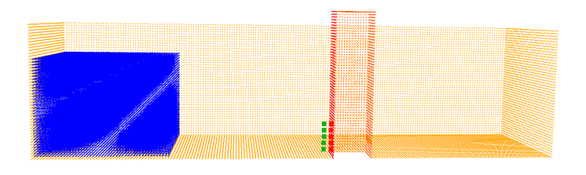
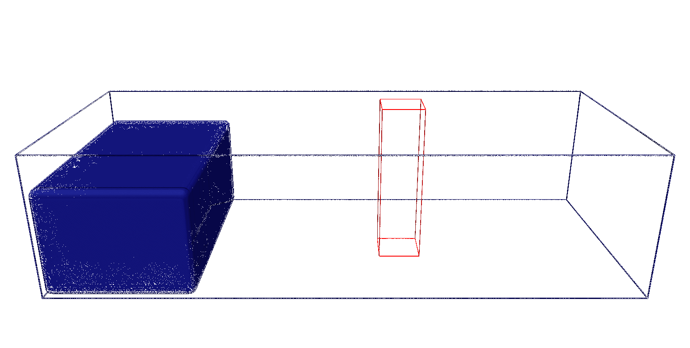

Dambreak 3D¶
This example demonstrates a 3-D dambreak simulation with an obstacle. A rectangular water column is initially held at rest, then suddenly released at time \(t=0\). The water collapses under gravity, flows through a rectangular tank, and impacts a building structure positioned downstream. The simulation captures the complex fluid dynamics including wave breaking, splashing, and fluid-structure interaction. you can find this case at DualSPHysics_v6\exxamples\main\01_DamBreak

For this dam break case, we use:
- Fluid mk=0 for water particles
- Boundary mk=0 for tank walls
- Boundary mk=1 for building structure
- Boundary mk=10 for a specific building wall (left side)
Geometry Definition¶
Domain Setup¶
<definition dp="0.0085" units_comment="metres (m)">
<pointmin x="-0.05" y="-0.05" z="-0.05" />
<pointmax x="2.00" y="1.00" z="1.00" />
</definition>
Particle spacing (dp): The inter-particle distance is 0.0085 m (8.5 mm). This is the fundamental resolution of the simulation. Smaller spacing provides better resolution but dramatically increases particle count and computational cost.
Domain boundaries: The computational domain extends slightly beyond the physical geometry (from -0.05 to 2.00 m in \(x\), -0.05 to 1.00 m in \(y\) and \(z\)). This buffer zone allows for proper boundary particle placement.
Shape Mode¶
Draw mode: full mode creates complete solid or hollow objects with particles filling the entire volume or surface as specified.
Fluid Block (Water Column)¶
<setmkfluid mk="0" />
<drawbox>
<boxfill>solid</boxfill>
<point x="0.00" y="0.00" z="0.00" />
<size x="0.40" y="0.67" z="0.30" />
</drawbox>
Marker assignment: setmkfluid mk="0" designates all subsequent particles as fluid with marker 0.
Solid fill: The water column is completely filled with particles arranged in a regular lattice at spacing \(dp\).
Position and size: The water column starts at the origin \((0,0,0)\) and extends:
- 0.40 m in the \(x\)-direction (length/downstream direction)
- 0.67 m in the \(y\)-direction (width)
- 0.30 m in the \(z\)-direction (height)
Aspect ratio: The water column is relatively wide (0.67 m) compared to its length (0.40 m), creating a 3-D dam break scenario rather than a 2-D one.
Tank Boundaries¶
<setmkbound mk="0" />
<drawbox>
<boxfill>bottom | left | right | front | back</boxfill>
<point x="0.0" y="0.0" z="0.0" />
<size x="1.60" y="0.67" z="0.40" />
</drawbox>
<shapeout file="Box"/>
Boundary marker: setmkbound mk="0" designates these as boundary (solid wall) particles with marker 0.
Selective filling: The boxfill parameter specifies which faces to create:
- bottom: Floor of the tank (\(z=0\) plane)
- left/right: Side walls parallel to \(x-z\) plane (\(y=0.0\) and \(y=0.67\))
- front/back: Side walls parallel to \(y-z\) plane (\(x=0.0\) and \(x=1.60\))
Tank dimensions: The tank extends 1.60 m in length, providing sufficient space for the water to propagate and interact with the obstacle. The width matches the water column (0.67 m), creating a channel-like flow.
Shape export: shapeout file="Box" saves this geometry to a separate file for visualization and verification before running the simulation.
Obstacle (Building)¶
The building is created in three steps: void creation, external walls, and marker assignment for specific surfaces.
Step 1: Create Void¶
<setmkvoid />
<drawbox>
<boxfill>solid</boxfill>
<point x="0.9" y="0.24" z="0" />
<size x="0.12" y="0.12" z="0.45" />
</drawbox>
Void marker: setmkvoid removes any particles in this region. This creates the hollow interior of the building, ensuring no fluid or boundary particles exist inside.
Position: The building is placed at \(x=0.90\) m, which is centered in the \(y\)-direction: \(y=0.24\) m.
Building size:$ 0.12 m \times 0.12 m \times 0.45 m$
Step 2: External Walls¶
<setmkbound mk="1" />
<drawbox>
<boxfill>top | left | right | front | back</boxfill>
<point x="0.90" y="0.24" z="0.0" />
<size x="0.12" y="0.12" z="0.45" />
</drawbox>
Building marker: mk="1" distinguishes the building from the tank walls (mk="0"), allowing separate force calculations and analysis of building loads.
Wall surfaces: Creates boundary particles on five faces:
- top: Roof of the building (\(z=0.45\) plane)
- left/right: Side walls parallel to \(x-z\) plane
- front/back: Side walls parallel to \(y-z\) plane
- No bottom: The building sits directly on the tank floor (which already has boundary particles from the tank definition)
Step 3: Special Marker for Impact Surface¶
<setmkbound mk="10" />
<drawbox>
<boxfill>left</boxfill>
<point x="0.9" y="0.24" z="0.0" />
<size x="0.12" y="0.12" z="0.45" />
</drawbox>
<shapeout file="Building"/>
Impact surface marker: The left face (facing upstream, where water first impacts) is reassigned marker mk="10". This allows our post-processing tools to more expeditiouly calculate impact forces, pressure distribution.
Running the Simulation¶
Execute the case using the provided batch/shell script:
Windows¶
REM Generate case geometry
gencase.exe CaseDambreakVal2D_Def CaseDambreakVal2D_out/CaseDambreakVal2D -save:all
REM Run simulation on GPU
dualsphysicsgpu.exe -gpu CaseDambreakVal2D_out/CaseDambreakVal2D CaseDambreakVal2D_out/CaseDambreakVal2D/data
REM Convert to VTK format
partvtk.exe -dirdata CaseDambreakVal2D_out/CaseDambreakVal2D/data -savevtk post/PartFluid -onlytype:-all,+fluid
Linux¶
# Generate case geometry
./gencase CaseDambreakVal2D_Def CaseDambreakVal2D_out/CaseDambreakVal2D -save:all
# Run simulation on GPU
./dualsphysicsgpu -gpu CaseDambreakVal2D_out/CaseDambreakVal2D CaseDambreakVal2D_out/CaseDambreakVal2D/data
# Convert to VTK format
./partvtk -dirdata CaseDambreakVal2D_out/CaseDambreakVal2D/data -savevtk post/PartFluid -onlytype:-all,+fluid
Post Processing¶
Fluid velocity¶
Using MeasureTool code, numerical velocities have been computed in the list of points described in the file CaseDambreak_PointsVelocity.txt, which are (0.754, 0.31, 0.02), (0.754, 0.31, 0.04) and (0.754, 0.31, 0.06) using information of fluid particles within the kernel interaction. Numerical values of Vx-velocity in the x-direction are shown in Figure 7-4 for these three points.
Windows¶
%measuretool% -dirdata %diroutdata% -points CaseDambreak_PointsVelocity.txt/
-onlytype:-all,+fluid/
-vars:-all,+vel.x,+vel.m/
-savevtk %dirout2%/PointsVelocity/
-savecsv %dirout2%/_PointsVelocity

Figure 7-4. Numerical velocity computed at three different locations.
Pressure¶
Pressure values are also computed using MeasureTool in the list of points described in the file CaseDambreak_PointsPressure.txt, which corresponds to locations in the front wall of the structure (Figure 2) using information of fluid particles within the kernel interaction. Due to the use of the dynamic boundaries, probes used for measuring quantities should not be placed at the exact position of boundary particles. The forces exerted by the boundary particles create a small gap between them and fluid particles (\(1.5 \times h\)); as a result, probes placed inside the gap will have a reduced fluid particle population and will produce either an incorrect or no result. To avoid this issue, it is proposed that probes are placed at a distance \(1.5h\) from the boundary positions.
In this example, the PointsPressure_Incorrect probes are placed at the exact position as the boundary particles at the building, while the PointsPressure_Correct probes are placed at a distance of \(1.5h\) (for the default conditions and parameters of the case) from the boundaries. The first probes produce no pressure results as the number of fluid particles for the interpolation is too small, while the second shows the pressure impact by the water flow.

Boundary Gap
Note that the probes are not automatically associated with the smoothing length \(h\) and their position has to be changed manually if the resolution changes. Also, by increasing resolution (i.e., using a smaller \(dp\)) the gap is reduced.
Figure 7-6 shows the pressure computed at the correct numerical probes.

Figure 7-6. Pressure values computed at different locations in CaseDambreak.
This case also shows how to compute forces exerted against a structure. In this way the force is computed using ComputeForces as the summation of the acceleration values of the boundary particles that form the front wall of the structure (mk=21) multiplied by mass. Figure 7-7 shows the time series of the numerical force.

Figure 7-7. Force (X-component) exerted on the front wall of the structure in CaseDambreak.
In fact, the methodology outlined here was used in for the validation of DualSPHysics presented in [Crespo et al. (2011)].
Finally, an example to use FlowTool is also available in CaseDambreak. Two different domains are defined in the text file CaseDambreak_FileBoxes.txt. Figure 7-8 shows the red domain (RESERVOIR) where the water reservoir was initially created and the green box (TANK) to compute the flow rate in front of the obstacle. The output VTK files named Boxes_xxxx.vtk are also depicted in Figure 7-8 and the colour corresponds to the domain to which they belong.

Figure 7-8. Domains to compute flow in CaseDambreak; RESERVOIR (red) and TANK (green).
FlowTool also creates a CSV file, named ResultFlow.csv. Hence, figure 7-9 represents the outflow of the red domain and the inflow into the green one.

Figure 7-9. Outflow in the domain RESERVOIR and inflow in the domain TANK.
